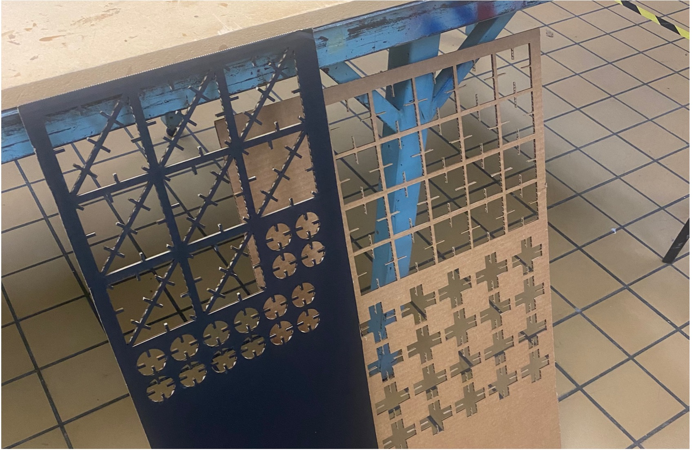

A1: Laser Cut Press Fit Construction Kit
By Jessica Hord

Documentation
Ideation
The first thing I did in the ideation process was break out some paper, a pencil, and scissors. I folded the paper a few different ways, created different kinds of shapes, and tried to get inspiration from that. One of the things I created when playing around with the paper was a bunch of triangles folded onto themselves, pictured below.

After that, I thought about how those triangles were exact halves of a square, and that it might be interesting to play with that. So, I cut out the larger pieces pictured below. I also created a square connector piece since there would need to be some way to connect the pieces.

After I had all the pieces, I started messing around with them to see where the pieces could potentially fit together, how deep slots should be, and more. I then created an Illustrator version of the pieces, printed them out, and tested a final paper prototype of how the pieces might fit together. I made revisions on where I wanted each slot, how many slots, and more based on the final paper prototype.
Design
After I had settled on the shapes through paper prototyping, I measured my cardboard with calipers. The calipers showed that the cardboard was exactly 4mm thick. The angle of the image is a bit confusing, but the calipers are clamped down just tight enough to measure and not crush the cardboard.

I updated my illustrator file based on my revisions to my paper prototype, making sure to be exact about the symmetry of the triangles and size the slots for the cardboard. I added more slots to the triangle pieces and made the connector piece a circle.I made the slots .3 mm less than the thickness of the cardboard (thanks Vanessa and Priyana) for a better fit.
I then made individual files for the triangle and rectangle connector shapes, imported them into Rhino, and made the shapes 3D based on the size of the cardboard.

I spent some time trying to build a 3D model in Rhino of how the pieces would fit together, but it was incredibly difficult trying to understand how to flip and rotate things with the limitations in the system and I didn’t get very far. I figured my time was probably best spent messing around with the laser cut pieces.
Implementation
I headed to the 8 to cut out my pieces. I set up the file with a .01 stroke and made it red (per the 8’s instructions). When I first went to cut my pieces, there was some sort of issue with my file. The techs all looked and could not figure it out. I had to recreate my file on their computer on the fly. My best guess is that there was some kind of issue with me using the Shapebuilder tool in Illustrator to create my shapes, because when I recreated them with Pathfinder it was fine. The pictures below are what it looked like on the laser cutter preview before and after I recreated my files.
After I fixed this issue, it was smooth sailing. I used the pre-set settings for mat board, with the thickness set to 3mm (1mm less than the actual size, since cardboard isn’t as dense, thanks Miranda!). These worked perfectly! Below are pictures of the settings.

After that, I put it all together in a few different ways!
Thank yous!
Miranda, Vanessa, and Priyana for helping with laser cutter tips before I headed in.
Bailey for the emotional support and company while laser cutting.
Source Files
Full laser cut AI fileRhino file
Bonus Pictures
